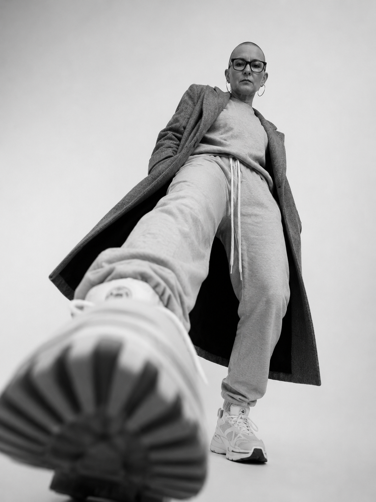

  <!-- Das neue Tagebuch-Gerüst mit Foto und der Live-Linie -->
  <div class="diary-3d-wrapper">
    <div class="book-environment">
      <div class="book-base"></div>

      <!-- LINKE SEITE (Statisch im Hintergrund) -->
      <div class="static-page-left" id="page-left-static">
        <div class="content-layer">
          <div>
            <div class="pink-badge" style="background:#000;">Kapitel 01</div>
            <h1 class="huge-title-diary" style="color:#e50914;">A CITY<br>TRANSFORMED</h1>
          </div>
          <div class="page-number">Seite 01</div>
        </div>
      </div>

      <!-- DIE BEWEGLICHE 3D-SEITE -->
      <div class="page-3d" id="flipPage" onclick="turnPage()">
        
        <!-- VORDERSEITE (Rechts beim Start) -->
        <div class="page-front" id="page-r-front">
          <div class="content-layer">
            <div>
              <div class="pink-badge">BY WORDS</div>
              <h1 class="huge-title-diary">MELODIEN<br>RAUSCH</h1>
            </div>
            
            <!-- DIE ANIMIERTE STIFT-LINIE AUS DEINEM BILD -->
            <div class="sketch-line-container">
              <svg class="sketch-line-svg" viewBox="0 0 400 100">
                <!-- Ein unperfekter, handgezeichneter Pfad -->
                <path class="sketch-path" d="M 10,50 Q 100,30 200,60 T 390,40" />
              </svg>
            </div>

            <!-- DAS SCHWARZ-WEIß-FOTO DIREKT UNTER DER LINIE -->
            <div class="diary-photo-box">
              
            </div>

            <div class="text-content" style="margin-top: 15px;">
              <strong>Eintrag 01</strong>
              Die Linie zieht sich quer über das Blatt und verbindet die Worte direkt mit dem Bild. Genau wie auf dem Festival-Plakat.
            </div>
            <div class="page-number" style="text-align: right;">Seite 02 ▸</div>
          </div>
        </div>

        <!-- RÜCKSEITE (Wird nach Umblättern links sichtbar) -->
        <div class="page-back" id="page-l-back">
          <div class="content-layer">
            <div>
              <h1 class="huge-title-diary" style="font-size: 3rem;">POESIE<br>AM RAND</h1>
            </div>
            
            <!-- Auch auf der Rückseite zieht sich eine Linie live auf -->
            <div class="sketch-line-container">
              <svg class="sketch-line-svg" viewBox="0 0 400 100">
                <path class="sketch-path" d="M 10,30 Q 150,70 250,20 T 390,60" />
              </svg>
            </div>

            <div class="text-content">
              <strong>Nächster Eintrag...</strong>
              Das Zusammenspiel aus rohen Strichen und deinen Fotos gibt dem Melodienrausch-Tagebuch einen extremen künstlerischen Charakter.
            </div>
            <div class="page-number">◀ Zurück | Seite 03</div>
          </div>
        </div>

      </div>

      <div class="hint">Klicke auf die rechte Seite zum Umblättern</div>
    </div>
  </div>
